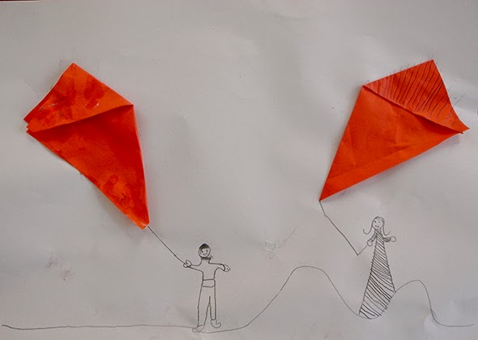

Facebook
Pinterest
Instagram
⌕ Search
ES
EN
DE
☰ Menu
Home
The House
Accessories
Decorate
Instruccions
Illustration
Custom water bottles
Notebook crafts and activities 01
App NOT ONLINE RIGHT NOW
Blog
Holidays
Christmas
Easter
Halloween
Carnival & costumes
Valentine’s Day
Birthday
Mother’s/Father’s Day
Back to school
Seasons
Spring
Summer
Autumn
Winter
What to do
Toys
Games
Printables
Food & recipes
Decoration
Painting
Experiments
Outdoors
Learning
Animals
Gifts & jewellery
Building & tricks
Other crafts
Material
Paper
Cardboard
Paper rolls
Recycling
Stones
Leaves & nature
Fabric & sewing
Paper
Category
Material
Chain
Printables
Shark
Experiment
Noahs book
Paper
Scrapbooking
Origami
Paper flowers
Occasion
Eggs
Activity
Colors
Paint
City
Paper
Kite

Printables
Bookmark
Printables
Bookmark
Origami
bunny
Material
Quilling?
Material
Quilling
Material
Stamps 02
Material
Stamps
Material
Paper- Bracelet
Material
Washi Tape
Material
Friends
Material
Detail 01
Material
Owls
Occasion
Hearts
Printables
Mouse ears
Occasion
Paper trees
← Newer
Page 2 / 4
Older →